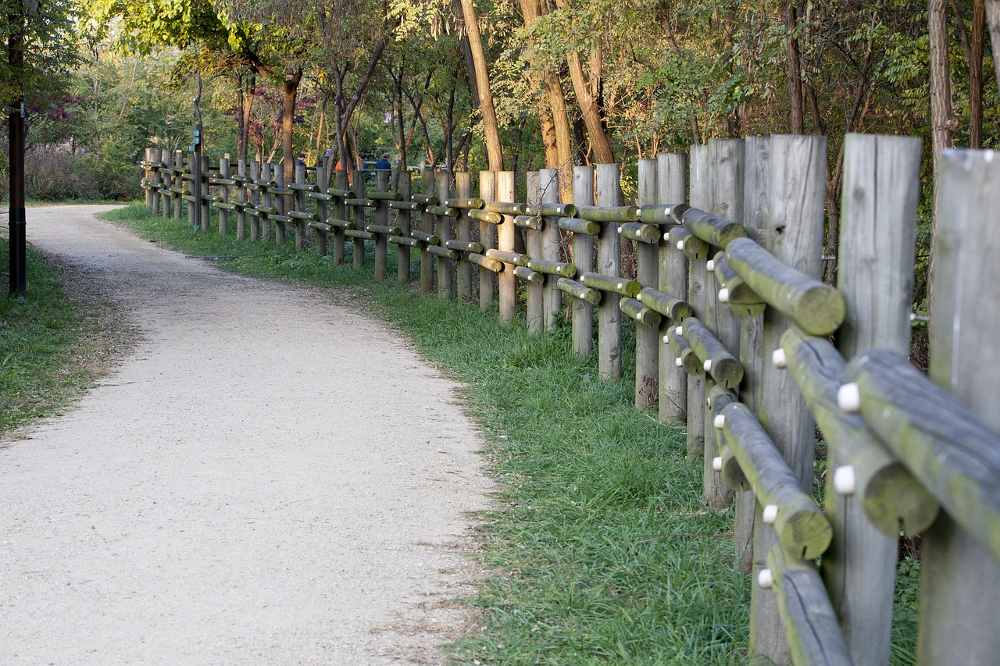
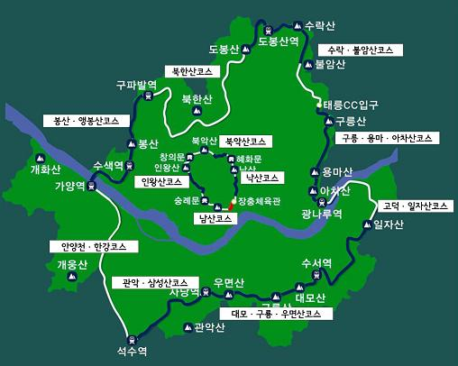
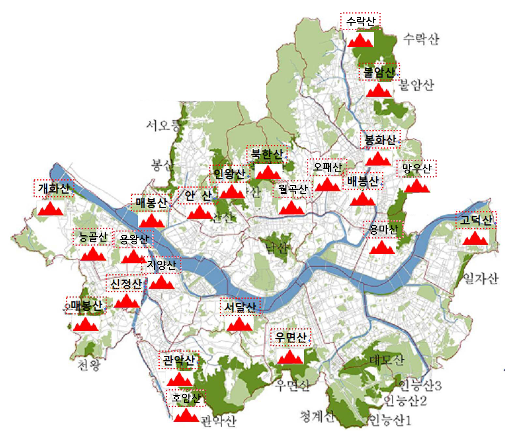
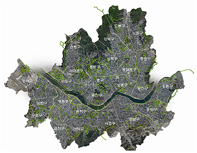

서울 두드림길
서울 두드림길

서울 두드림길
서울 두드림길
|  | 생태문화길주민 및 트래킹 전문가가 참여하여 서울시의 역사, 문화, 생태자원이 |
|  | 근교산자락길주택가 주변 풍경이 아름다운 곳에 경사가 완만한 등산로를 조성하여 |
|  | 한양 도성길서울의 내·외사산을 연결하는 순환코스를 정비하여 |
한강지천길/계절길낙산 구간, 남산 구간, 백악 구간, 숭례문 구간, 인왕산 구간, 흥인지문 구간이 있다. |
|
서울 두드림길